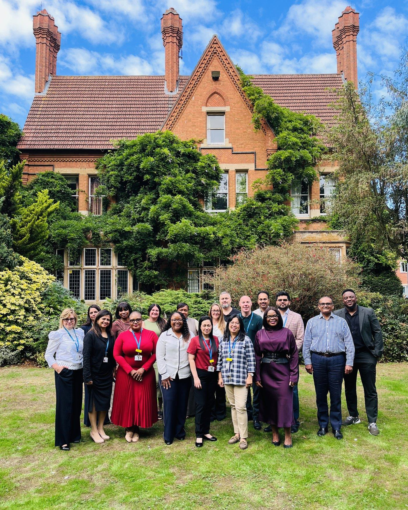
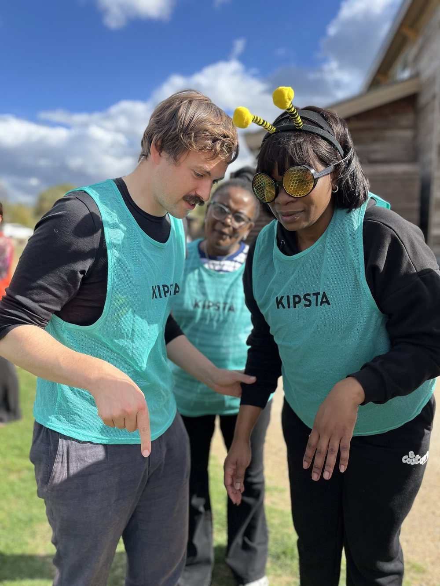
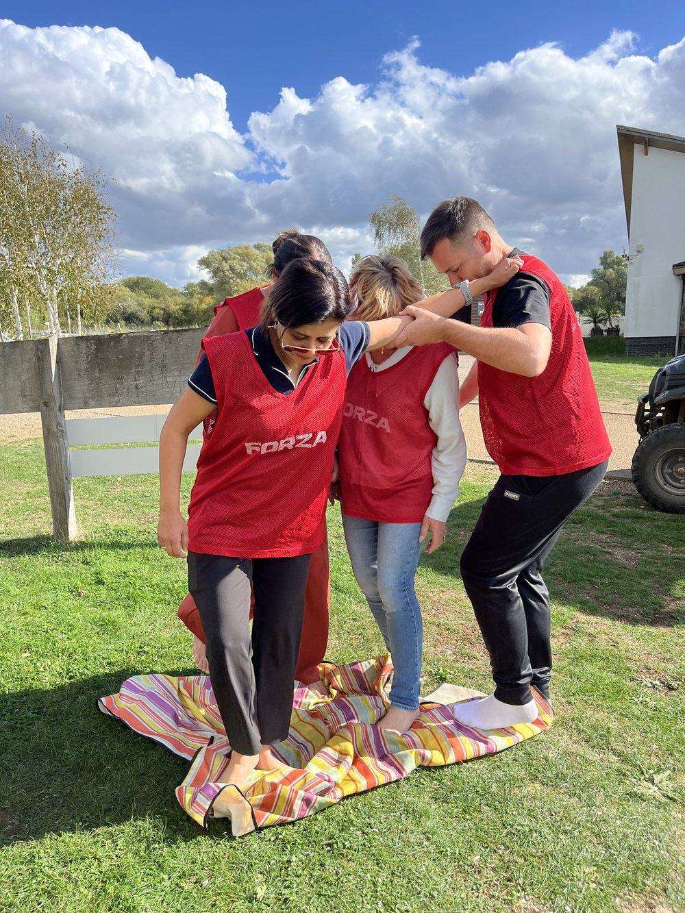
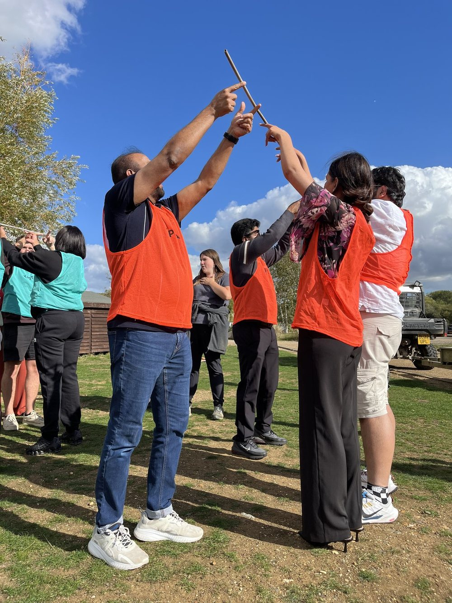
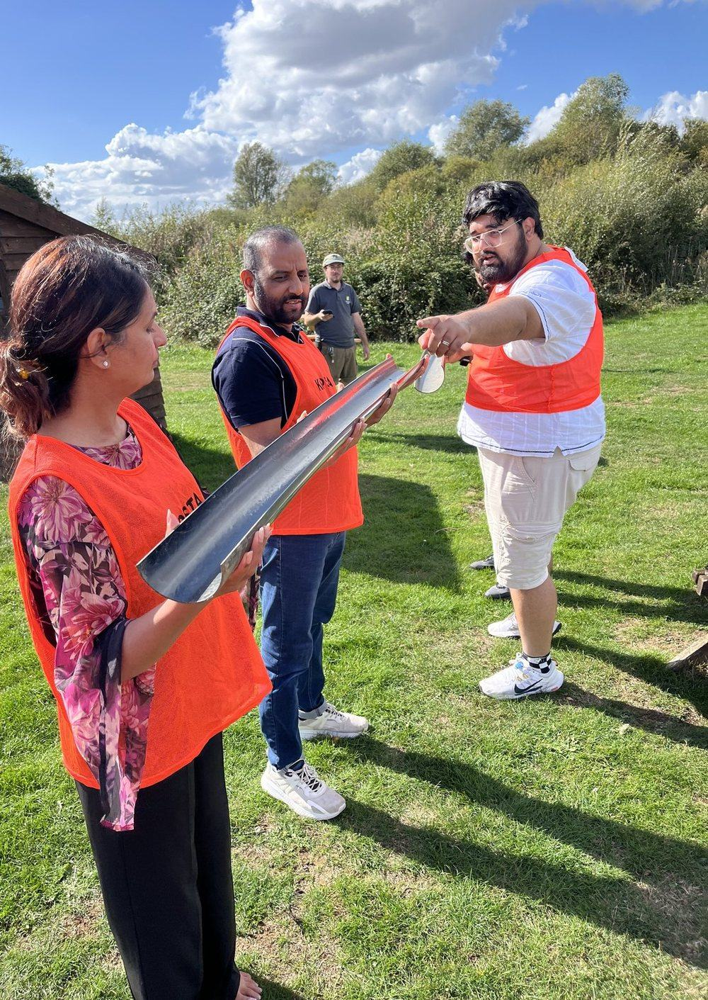
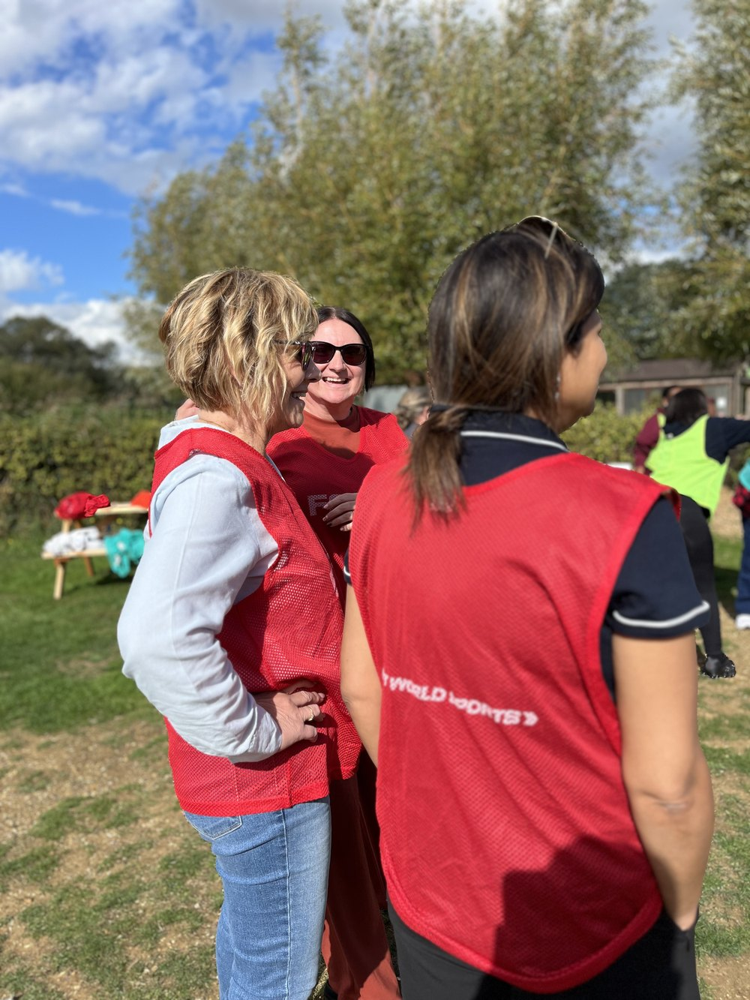

Built by our people.I see you. I hear you. You matter.
Change at St Matthews is not being done to our people. It is being built by them. Transformation happens because people believe in it, feel listened to and feel valued.

A culture where every voice counts.
Two hospitals, one field and a lot of team spirit.
Teams from both hospitals took on challenge after challenge together. Thank you to everyone who took part and made the day what it was.






We did the exercises. We challenged each other. We laughed.

Celebrating Alan.
We are incredibly proud to celebrate Alan, our Head Chef, following our fantastic five star food hygiene rating.
His hard work, attention to detail and commitment to compliance have been instrumental in achieving this result. Alan takes enormous pride in the kitchen and the service he provides.
Pictured: Alan, Head Chef, with the Registered Manager of Hawthorne House.
Read the storyI’m passionate about helping our residents stay active, independent and confident. Movement really does matter.

Meet Mercy Joy.
Mercy is our Falls Champion at Hawthorne House, helping to promote safety, confidence and independence for residents. She is piloting a project with Arthritis Action, exploring why movement matters, and has shared her knowledge of falls prevention on a podcast.
Ten services. Many ways in.
Roles across our two hospitals and eight nursing homes in Northamptonshire, Coventry and East Sussex. Choose an area of work to send a short enquiry to our recruitment team.